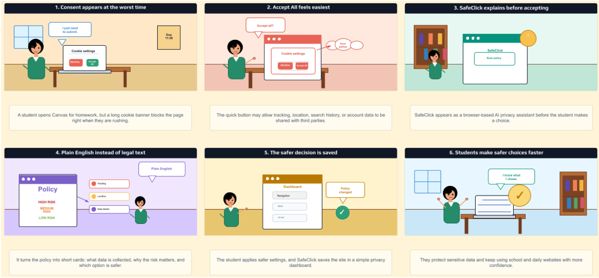
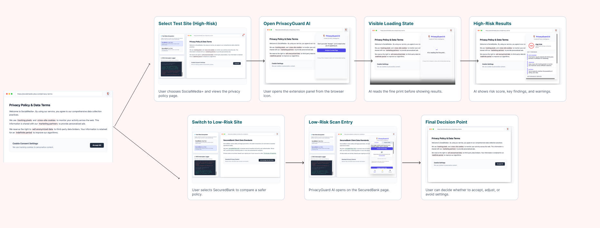

An AI-powered browser extension that reads privacy policies before students click "Accept All" — turning legal confusion into informed, safer choices.
Every day, college students open Canvas to submit an assignment, sign into a banking app, or check social media — and a cookie consent banner blocks the screen. With a deadline around the corner, the easiest and fastest option is "Accept All."
That single click can authorize a website to collect tracking data, location access, search history, and account information and share it with third parties. Most students have no idea this is happening because privacy policies are written in dense legal language that can run to thousands of words.
"Students may click 'accept' without understanding what personal data they are sharing — not from carelessness, but because the system is designed to make accepting easy and refusing hard."
Existing solutions fall short. General privacy grade sites rate companies globally, not in the context of a specific decision a student is making right now. Tools like Apple Privacy Labels help but are buried in settings. No current solution intercepts the moment of consent and explains it in plain language before the click happens.
College students who use Canvas, Instagram, banking apps, and AI tools daily — often under time pressure.
Universities, professors, and families are indirectly affected when students unknowingly share sensitive data.
Legal text is long, jargon-heavy, and strategically placed at moments of high friction and low attention.
Existing tools are too spread out or too general — none act before the consent click in a student context.
The team conducted Wizard of Oz testing using a paper prototype. One team member acted as the system, manually switching screens whenever a participant tapped a button, while participants thought aloud throughout the session.
Participants
Four college students from two different INFO 360 group — matching the target user profile of students who regularly use Canvas, apps, and online tools.
✓ What Worked Well
Group 2 understood that the design was helping them make a privacy decision before accepting cookies. The “Medium Risk” was easy to notice, and they also knew that the tool was warning them about possible privacy concerns. The dashboard idea also made sense because it showed where saved websites or privacy choices could be stored for later review.
✗ Problems & Confusion
Group 2 was not sure whether the prototype was an app, a website pop-up, or a browser extension. They also understood the “Medium Risk”, but they wanted to know why the risk was medium. Another confusion was the difference between “Reject All” and “Apply Safe Settings Automatically.” The participant was also less likely to notice the “See Full Summary” button because it did not stand out enough.
→ Key Learnings
Students want quick privacy guidance, but they still need enough explanation to trust the tool’s recommendation. The risk level is useful, but it should include a short reason, like what data is being collected or shared. The safest action should be visually clear, and each button should explain what will happen if the user chooses it. We also learned that the product needs a clear label, like “Browser Extension,” so users immediately understand what type of tool they are using.

Every design decision in SafeClick was driven by a single principle: intercept the moment of consent and make the safer choice the easier choice. Below are the core decisions and the reasoning behind them.
Rather than showing users raw policy text, SafeClick assigns a High / Medium / Low risk label. Research shows students scan rather than read — a single prominent label communicates urgency instantly without requiring comprehension of legal language.
Cookie policies average 2,500 words. SafeClick converts them into 3–5 bullet cards. This follows recognition over recall: users should not need to remember what a "third-party data broker" means — the interface should make implications clear in everyday language.
The "Apply Safe Settings" button is visually dominant. Nudge design research shows that default and prominent options are chosen significantly more often. If the safest option is the most visible, users default to privacy without extra effort.
A one-time setup lets students save preferences across sites, reducing decision fatigue. The dashboard also logs prior choices so users can review or update settings — addressing the problem of "set and forget" that current tools suffer from.
Policies change frequently without user notification. SafeClick monitors previously-agreed sites and sends brief alerts when terms are updated — giving ongoing awareness, not just one-time guidance.
Placing the tool in the browser — rather than a separate app — means it appears at exactly the moment of decision, on any site. An app would require students to manually check; a browser extension is proactive and frictionless.
| Decision | Alternative Considered | Why We Chose This | Trade-off |
|---|---|---|---|
| Risk label (High/Med/Low) | Numerical score (0–100) | Categorical labels require less interpretation under time pressure | Less granular; edge cases hard to categorize |
| Browser extension | Standalone mobile app | Intercepts consent at the exact moment it occurs on any site | Desktop-first; mobile browsers limit extensions |
| Saved preference one-time setup | Per-site manual decisions | Reduces repeated friction; matches student workflow | Preferences may become stale over time |

SafeClick is a browser-based AI privacy assistant that activates before a student clicks "Accept All." It scans the current page's privacy policy, summarizes the critical parts in plain language, assigns a risk rating, and recommends the safest available action — all within the moment of consent.
The solution consolidates features that exist separately across Apple Privacy Labels, browser settings, and third-party rating sites into a single, student-friendly interface that works before the decision is made.
"It does not replace reading a policy — it ensures that students who don't have time to read one still understand what they're agreeing to and what they can do about it."
A student opens Canvas to submit homework. A cookie banner blocks the page right when they're rushing to meet an 11:59 PM deadline.
The quick "Accept All" button may allow tracking, location, search history, and account data to be shared with third parties — but this isn't visible to the student.
SafeClick appears as a browser-based AI privacy assistant before the student makes a choice. The student clicks "Scan Policy" to begin.
Policy is converted into short cards showing: what data is collected (tracking, location, data shared), and which parts are HIGH / MEDIUM / LOW risk.
Student applies safer settings. SafeClick stores the site in a simple privacy dashboard and will notify the user if the policy changes later.
The student returns to the website and says "I know what I chose." They protect sensitive data and continue using school and daily websites with more confidence.
Early in the project, we assumed students were careless about privacy. User research revealed the opposite: students care, but the system is designed to make "Accept All" the path of least resistance. Good design can rebalance that.
General privacy tools exist, but none act at the exact moment of decision, in the browser, for a student. We learned that timing and placement of a design intervention matter as much as its content.
Our user tests showed that a risk label alone is not enough — participants wanted to know why the risk level was assigned. Trust in AI guidance requires transparency about reasoning, not just conclusions.
We initially focused on comprehensive policy analysis. Testing revealed that speed and clarity mattered more than completeness. We shifted from "show everything" to "show what matters most, right now."
Challenge 01
Balancing information density: how much to show without overwhelming a time-pressured student. Too little and users don't trust it; too much and they ignore it.
Challenge 02
Naming things correctly. "Reject All" vs "Apply Safe Settings Automatically" confused users — language design is as important as visual design.
Challenge 03
Users weren't sure what type of product they were using. Establishing the "Browser Extension" framing early became a critical fix that we underestimated in early iterations.
With more time, we would conduct more diverse user tests including non-CS students, run longitudinal tests to see if SafeClick actually changes behavior over weeks, and prototype the AI summarization pipeline to test accuracy of risk labels against real policy text.
Browser extensions are primarily supported on desktop. Students who browse heavily on mobile (Instagram, banking apps) would not benefit from SafeClick in its current form. A mobile companion app or Safari/Chrome mobile extension would be needed.
The design has not been rigorously tested for users with visual impairments, cognitive differences, or motor limitations. Screen reader compatibility, keyboard navigation, and font scaling need dedicated design attention.
The design assumes the AI summarization and risk-labeling are accurate. In practice, AI models can misclassify nuanced legal language. The prototype does not yet test the reliability of these classifications against real policies.
The one-time preference setup is convenient but risks becoming outdated. A user's tolerance for data sharing may change, and saved settings need a low-friction review mechanism beyond just policy-change alerts.
International students accessing non-English sites or policies would not be served by the current plain English summary model. Multilingual support is a future requirement for true inclusivity.
Next steps: deploy on Chrome Web Store for real-world testing, add parent/teacher reporting dashboards, personalize explanations by reading level, expand to app permission requests (not just cookies), and integrate with university IT systems.